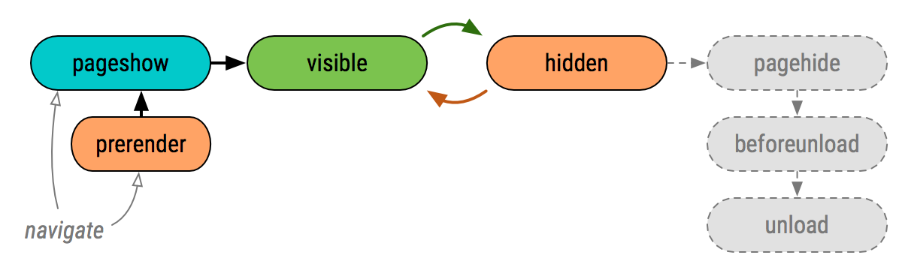
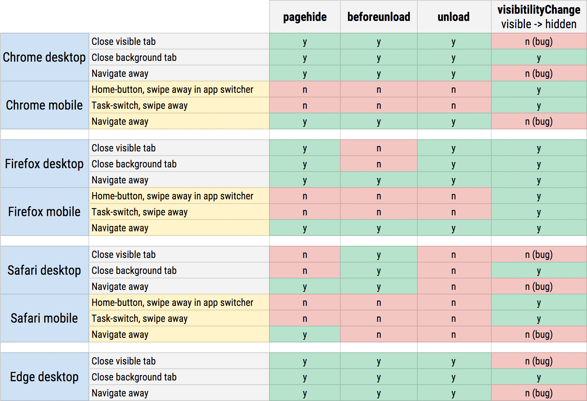

the link of articles
Great applications do not lose user's progress and app state. They automatically save the necessary data without interrupting the user and transparently restore themselves as and when necessary - e.g. after coming back from a background state or an unexpected shutdown.
Unfortunately, many web applications get this wrong because they fail to account for the mobile lifecycle: they're listening for the wrong events that may never fire, or ignore the problem entirely at the high cost of poor user experience. To be fair, the web platform also doesn't make this easy by exposing (too) many different events: visibilityState, pageshow, pagehide, beforeunload, unload. Which should we use, and when?

You cannot rely on pagehide, beforeunload, and unload events to fire on mobile platforms. This is not a bug in your favorite browser; this is due to how all mobile operating systems work. An active application can transition into a "background state" via several routes:
The user can click on a notification and switch to a different app.
The user can invoke the task switcher and move to a different app.
The user can hit the "home" button and go to homescreen.
The OS can switch the app on users behalf - e.g. due to an incoming call.
Once the application has transitioned to background state, it may be killed without any further ceremony - e.g. the OS may terminate the process to reclaim resources, the user can swipe away the app in the task manager. As a result, you should assume that "clean shutdowns" that fire the pagehide, beforeunload, and unload events are the exception, not the rule.
To provide a reliable and consistent user experience, both on desktop and mobile, the application must use Page Visibility API and execute its session save and restore logic whenever visibilityChange state changes. This is the only event your application can count on.
// query current page visibility state: prerender, visible, hidden
var pageVisibility = document.visibilityState;
// subscribe to visibility change events
document.addEventListener('visibilitychange', function() {
// fires when user switches tabs, apps, goes to homescreen, etc.
if (document.visibilityState == 'hidden') { ... }
// fires when app transitions from prerender, user returns to the app / tab.
if (document.visibilityState == 'visible') { ... }
});
If you're counting on unload to save state, record and report analytics data, and execute other relevant logic, then you're missing a large fraction of mobile sessions where unload will never fire. Similarly, if you're counting on beforeunload event to prompt the user about unsaved data, then you're ignoring that "clean shutdowns" are an exception, not the rule.
Use Page Visibility API and forget that the other events even exist. Treat every transition to visible as a new session: restore previous state, reset your analytics counters, and so on. Then, when the application transitions to hidden end the session: save user and app state, beacon your analytics, and perform all other necessary work.
If necessary, with a bit of extra work you can aggregate these visibility-based sessions into larger user flows that account for app and tab switching - e.g. report each session to the server and have it aggregate multiple sessions together.
Practical implementation considerations
In the long term, all you need is the Page Visibility API. As of today, you will have to augment it with one other event — pagehide, to be specific — to account for the "when the page is being unloaded" case. For the curious, here's a full matrix of which events fire in each browser today (based on my manual testing):

visibilityChange works reliably for task-switching on mobile platforms.
beforeunload is of limited value as it only fires on desktop navigations.
unload does not fire on mobile and desktop Safari.
The good news is that Page Visibility reliably covers task-switching scenarios across all platforms and browser vendors. The bad news is that today Firefox is the only implementation that fires the visibilityChange event when the page is unloaded — Chrome, WebKit, and Edge bugs to address this. Once those are resolved, visibilityState is the only event you'll need to provide a great user experience.
Ilya GrigorikIlya Grigorik is a web performance engineer at Google, co-chair of the W3C Web Performance working group, and author of High Performance Browser Networking (O'Reilly) book — follow on Twitter, Google+.